Jamaica Tacos (Hibiscus Tacos)
traditional Mexican recipe
Ingredients
- 2 cups soaked jamaica / hibiscus flowers (leftover from agua de jamaica)
- 0.5 onion, diced
- 2 tablespoons avocado oil or neutral oil
- 2 cups vegetable broth
- 1 teaspoon garlic powder
- 1 tablespoon soy sauce, tamari or liquid aminos
- 8 corn tortillas
- Salsa, cilantro and diced onion (to serve)
Step 1
Prep the jamaica: Make a double batch of agua de jamaica first. Rinse the soaked hibiscus flowers repeatedly until the water runs clear, then chop into smaller pieces.
Step 2
Fry the onion: Heat oil in a pan over medium heat. Add diced onion and fry until golden brown.
Step 3
Add jamaica and broth: Add the chopped hibiscus flowers to the pan with the onion and cook together for a few minutes. Then pour in the vegetable broth.
Step 4
Simmer until absorbed: Reduce to low heat and simmer until the jamaica has absorbed all the broth.
Step 5
Season: Add garlic powder and soy sauce (or tamari/liquid aminos) and cook for 2 more minutes. Taste and adjust seasoning.
Step 6
Assemble and serve: Serve on warm corn tortillas topped with salsa, cilantro and diced onion.
1 Recipe source: Healthy Simple Yum
2 Fun fact: This recipe uses the leftover hibiscus flowers from making agua de jamaica — zero waste! Make a double batch of the drink first so you have enough flowers.
3 For extra umami, try adding a spoonful of miso to the vegetable broth.
4 Fresh garlic also works great — add it after the onion and cook for about 1 minute before adding the flowers.
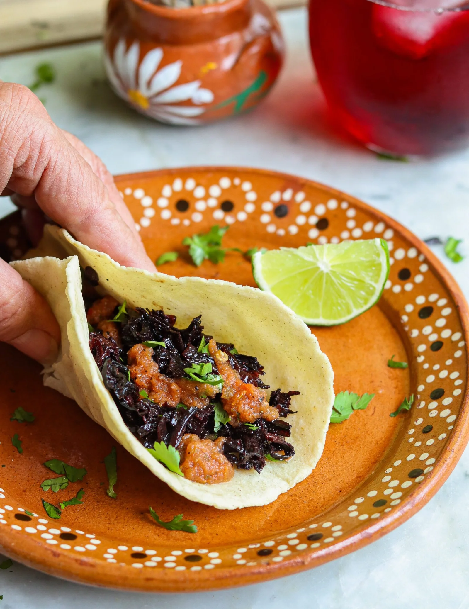
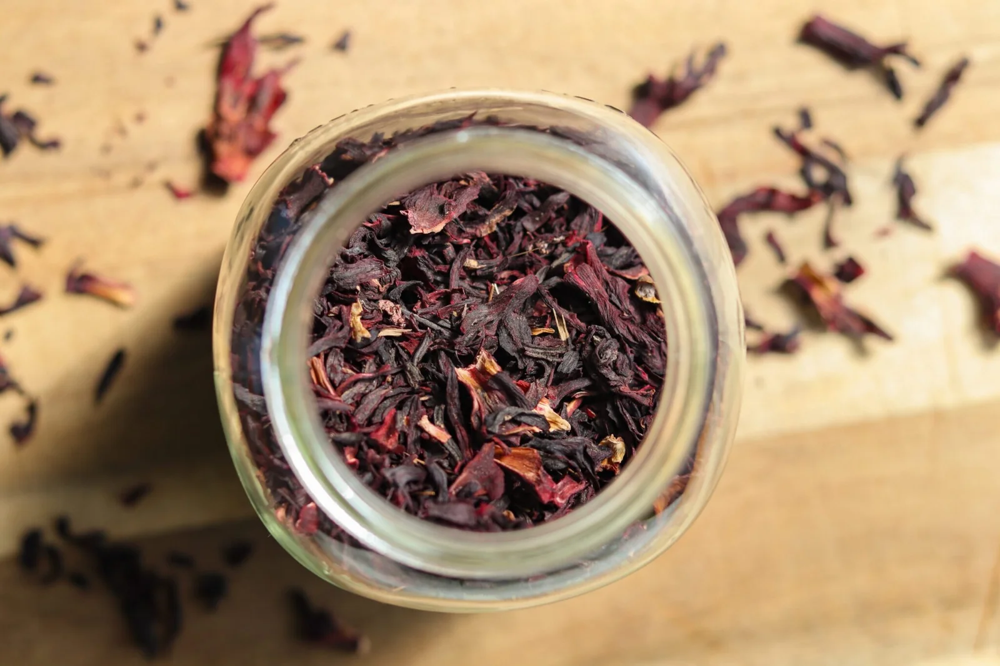
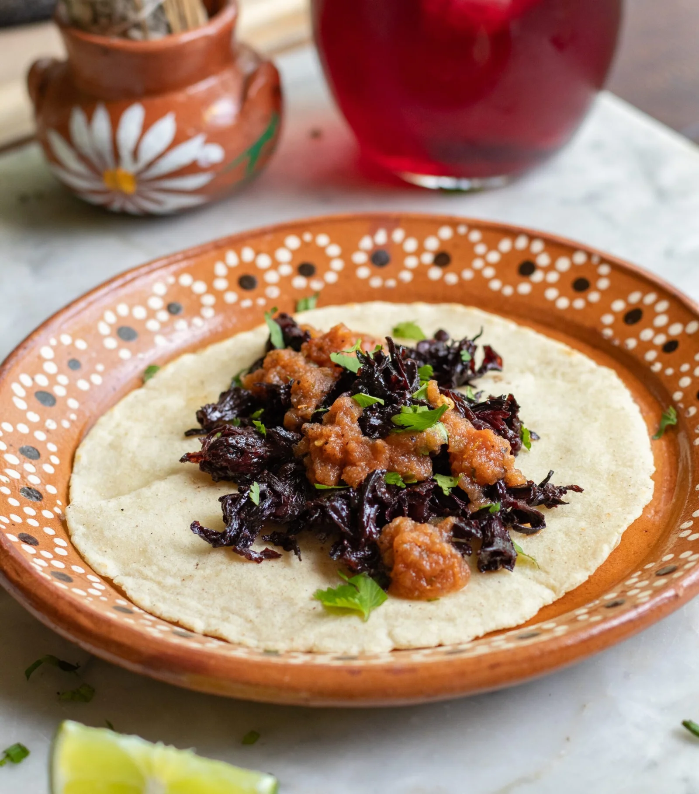
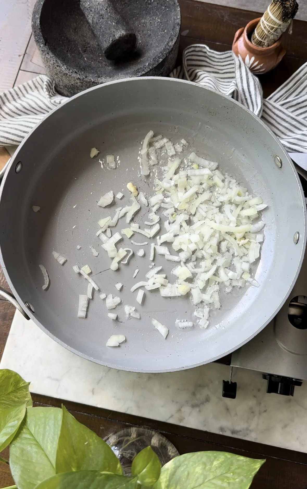
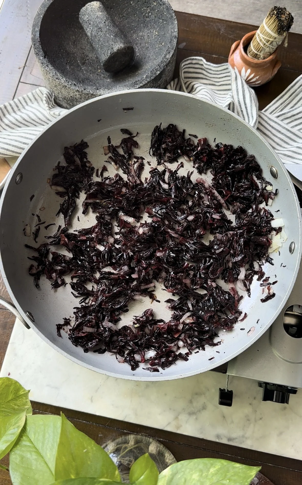
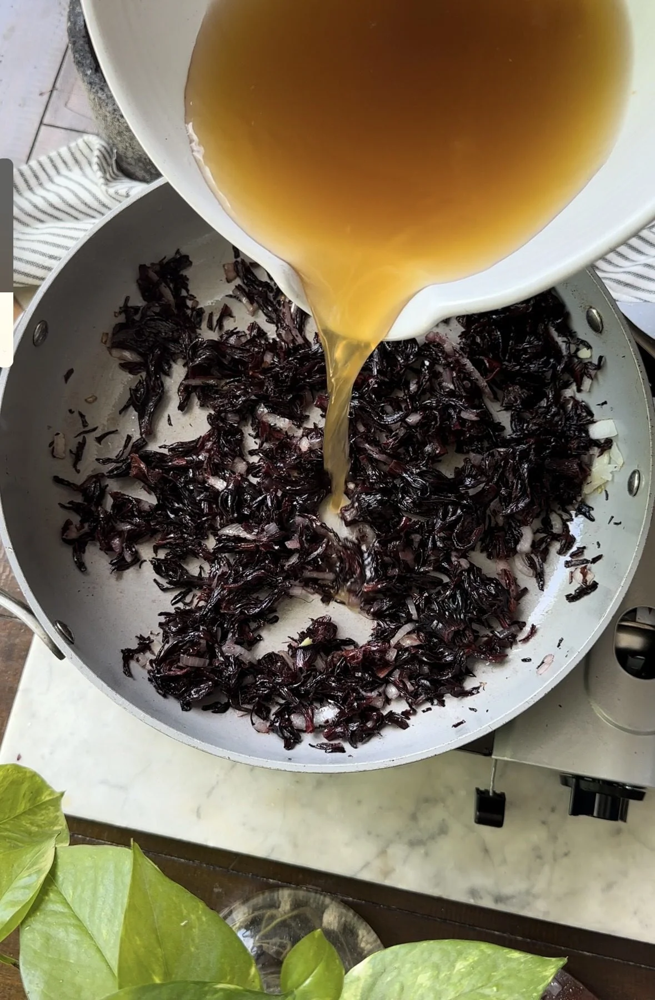
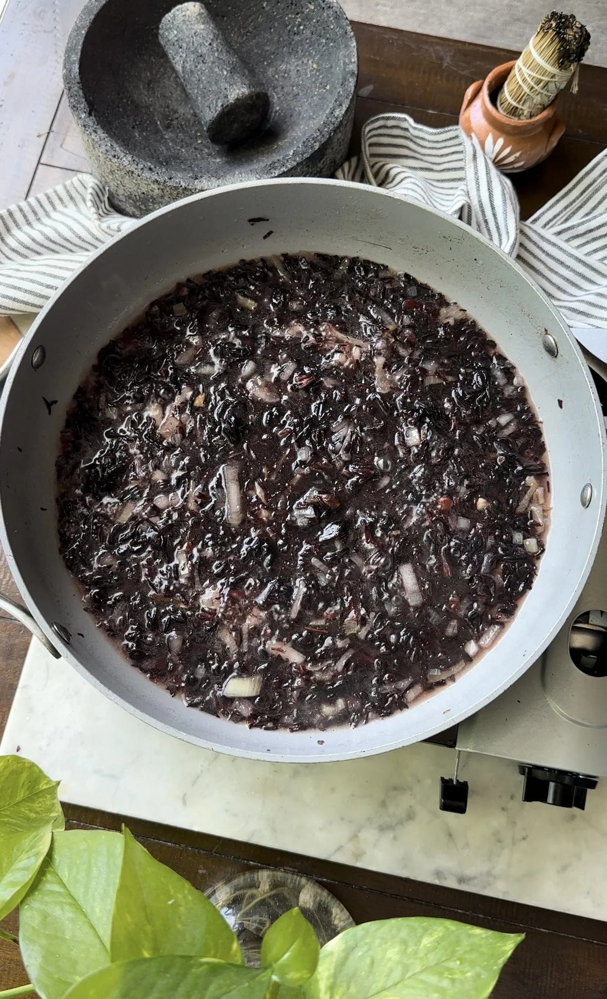
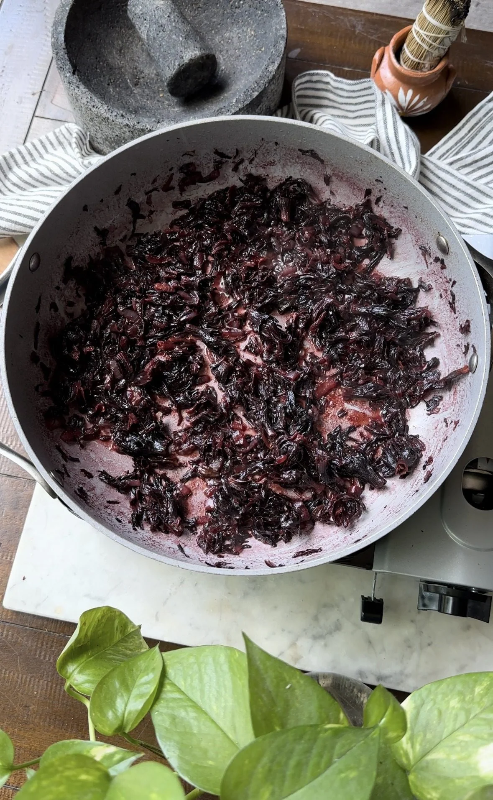
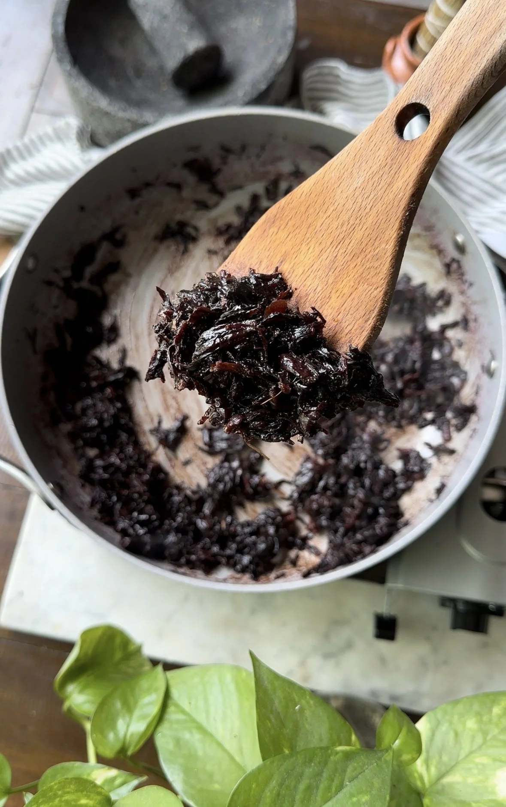
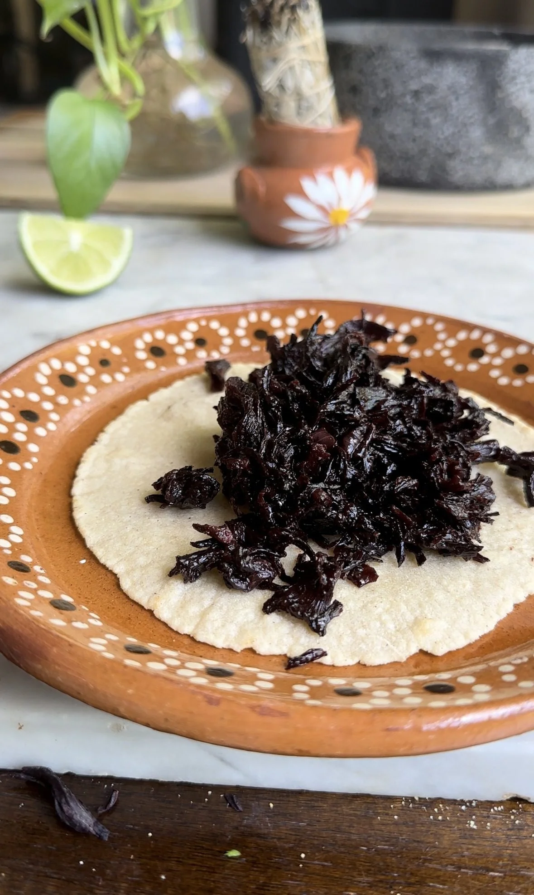
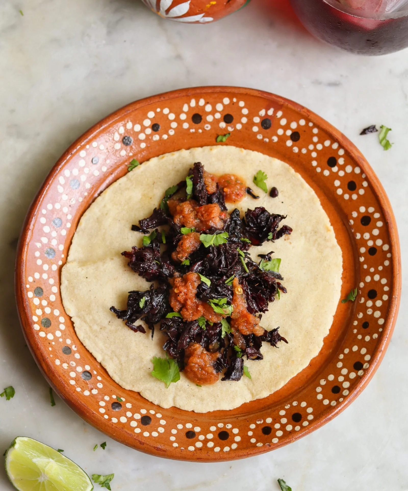